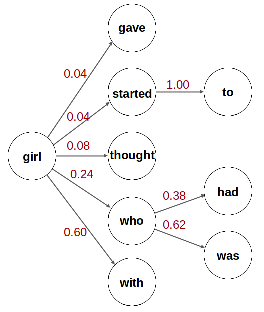

How do large language models such as ChatGPT generate novel text
after training on a large collection of source material? To
explain this, it's common to start with the concept of Markov
chains. One example is this video from Code.org:
The Markov chain in the Code.org video uses sequences of
letters, but most large language models use either whole words
or word fragments (called "tokens"), not letters. Our
MarkovChainDemo program uses whole words.
But what exactly is a Markov chain? Think of it as a process
that generates a stream of text using a table of words. For
each word, the table lists all the words that could follow it
in a sentence. This table is compiled by examining a body of
source text word by word. For example, we could use the first
few pages of chapter 1 of The Wizard of Oz. In this
source, the word "girl" is followed by "gave", "started",
"thought", "who", or "with", so the table entry for "girl"
would list those five successor words.
To generate new text, start by picking an initial word, then
use the table to find the list of successors to that word and
pick one successor at random. That becomes the next word in
the generated text. Then use the table to choose a successor
to that word, and so on. We will treat punctuation marks such
as periods or exclamation points as "words" that can have
successors, so we're not forced to stop after generating a
single sentence. The generation process can go on for as long
as we like.
To make the process smarter we should pay attention to the
frequency of each successor. For example, "girl" in our
source text is followed only once by "gave", but six times by
"who" and 15 times by "with". So when choosing a successor to
"girl" we should pick "with" more frequently than we pick
"gave". This makes our Markov chain a statistical
model of the text: words in the generated text will occur
with the same frequencies as words in the source text. Large
language models like ChatGPT are also statistical models, but
of a different kind.
What the Demo Is Showing You
MarkovChainDemo uses the first few pages of chapter 1
of The Wizard of Oz as its default source text. This
is shown in pane [1]. To the right of that, pane [2] shows
the table compiled from the text. For each word, printed in
green, the table lists all the words that have followed it in
the text, along with how many times that word occurred. If
you scroll down to the entry for "girl" you will see the five
words that have followed it in this source text. The header
in pane [2] indicates that the table contains a total of 599
words, and that each word has an average of 2.5 successors
(the "branching factor".) The first word is "a", and if you
use the scroll bar to scroll down to the end of the table
you'll see that the last entries are the punctuation marks.
The "Export" button in pane 2 saves the dictionary as a json
file that can be imported into other programs for further
experimentation.
Pane [3] at the bottom left contains the generated text. By
default we limit the length of this text to 100 words, but you
can change the limit if you wish. Press the green Generate
Text button to generate new text sequences starting with a
randomly chosen initial word. You'll notice that the text is
mostly grammatical, and individual phrases are understandble,
but at the sentence level it but doesn't make any sense. To
do better, we need a smarter statistical model. We'll
introduce one later in this document.
Manual Text Generation
To get a better feel for how the text generation process in
pane [3] works you can switch from Automatic to Manual
generation. Now for each word the pane will display the list
of successors and you can click on the one you want, or click
on the red Random Choice button to have the computer choose
one for you.
Using A Different Source Text
To replace the default Wizard of Oz text in pane [1]
with something else, press the Clear button and then paste or
type in the text you would like to use.
It's also possible to import Wikipedia articles as source
text. Type the title of the article into the Wikipedia
article search box and click on the Import button. Try this
for "dachshund" or "George Washington".
Bigrams, Trigrams, and Tetragrams
The word table we've been using is called a bigram
model because it represents pairs of words, i.e., an
individual word and its successors. In computer science
terminology the table is called a "dictionary". Each
dictionary holds a collection of "entries" which consist of a
"key" and a "value". In the bigram dictionary, the keys are
words and the values are lists of successor words. Bigrams are
not a very good statistical model of English, which is why
text generated using a bigram model doesn't make much
sense.
We could instead use a trigram model which represents
sequences of three words. To try this out, click on the
dictionary button in pane [2] and change "Bi-gram" to
"Tri-gram". Now the dictionary keys are two-word sequences,
with the successor words (values) contributing the third word
of the trigram. As before, the dictionary tells us all
possible successors for each key. In the Wizard of Oz
source text you can see that the first dictionary entry has
the key "a baby", and the only successor word is "in".
The header in pane [2] when using the trigram dictionary shows
that there are 1497 entries, whereas the bigram dictionary had
only 599. But the branching factor is much lower for the
trigram model: around 1.2, compared to 2.5 for the bigram
model. This low branching factor means most trigram entries
have only one successor. The number would go up if a larger
body of source text were supplied.
The trigram statistical model generates somewhat more sensible
text than the bigram model because it uses more context
(two words instead of one) when choosing possible
successors.
We can go even further and try a tetragram model, where
each dictionary key is a sequence of three words and the
successors are the possible fourth word. Try it and see what
the results look like. The tetragram dictionary has 1800
entries, but the branching factor is a miniscule 1.031. Due
to the small size of the source text, almost all the entries
have only one successor. Generating new text is thus likely
to reproduce entire sentences from the source because the
model's choices are so tightly constrained. But we can depart
from rote repetition in places where a phrase is generated
that appears in several places in the source text, as this
provides a branching factor greater than 1.
How Does This Relate to Large Language Models?
We've seen that Markov chain models can be used to generate
new text that has the same statistics as the source text. We've
also seen that more context leads to better results: the
bigram model's output was close to gibberish, while the
trigram model produced coherent sentence fragments and the
tetragram model produced entire sentences that mostly made
sense.
What would it take to do better than the tetragram model?
Clearly we would need much larger amounts of source text.
Large language models such as ChatGPT are trained on billions
of words of text, not a few pages. We would also need to take
larger amounts of context into account than just the last few
words of generated text. But even this wouldn't be enough to
reach ChatGPT-level performance. The final thing we would
need is more sophisticated statistical inference than is
possible with an n-gram model. Thus, we should replace the
dictionary with a deep neural network.
A deep neural network is able to use the entire body of text
generated so far (plus the "prompt" if one was supplied) as
its context when choosing the next word. This would be like
using a dictionary whose keys were ten thousand words long.
But the neural net does this in a more clever way, using
complex circuitry to extract context information from wherever
it's needed in the text. It's also able to apply knowledge
about the meanings of words and phrases using representations
called embeddings. Thus, while our simple dictionary
would treat "dog" and "puppy" as no more similar than "dog"
and "pencil", embeddings tell the deep neural network that
"dog" and "puppy" are closely related, so contexts where "dog"
could appear are also contexts where "puppy" could likely
appear. This is just one example of the more sophisticated
reasoning possible with a neural network model of
language.
Today's advanced large language models use deep neural
networks with hundreds of billions of parameters. But these
sophisticated models still have something in common with the
simple Markov chain models we examined here: they both
generate text one word at a time based on statistics mixed
with random choice.
To Learn More
(1) Markov Models: The type of Markov model we've been
using is called a discrete time Markov model, or Markov
chain. Markov chains are said to be "memoryless" because
they depend only on the current state, not on past
history. To put this in familiar terms, for bigrams the
"state" is the current word. For trigrams the state is
the last two words, and for tetragrams it's the last three
words. Each dictionary key is a "state", and the list of
successor words determines the next states that can be
reached from that state. It is common to draw Markov
models as graphs where the states are nodes and the
allowed transitions between them are links. Every
transition has a numeric "weight" attached to it which
gives the probability that that transition will be chosen.
For example: the word "girl" appears 25 times in the
source text, and for six of those appearances the
successor is "who". Therefore the probability of "who"
as a successor of "girl" is 6/25 or 0.24.
Partial Bi-gram Dictionary
Key
Entry
gave
...
girl
gave (0.04)
started (0.04)
thought (0.08)
who (0.24)
with (0.60)
had
...
started
to (1.00)
thought
...
to
...
was
...
who
had (0.38)
was (0.62)
with
...

The figure above shows a tiny portion of the Markov state
diagram for our bigram model of The Wizard of Oz
text. Note that for each node where the outgoing transitions
are shown, the weights always sum to 1; this is a
requirement when working with probabilities.
Even if a state represents the last several words instead
of just the word most reccently chosen, the Markov model
is still considered "memoryless" because its states
contain only a finite amount of information, while the
length of the generated sequence is potentially
infinite.
(2) Transformer neural networks: The neural network
architecture most commonly used by large language models
such as ChatGPT is the transformer. There are many
online resources describing how transformers work. See
this page for suggestions.
(3) Word embeddings: Word embeddings are the
representations transformers use to access meaning. See
this Word Embedding Demo to learn more about
how they work.
Credits
MarkovChainDemo was developed by Aditya Dewan (The Woodlands
Secondary School) and David S. Touretzky (Carnegie Mellon
University) (equal contribution).
This work was funded by National Science Foundation award IIS-2112633.
All code can be found here:
GitHub